收录于合集
文献来源： 郑振清,苏毓淞,张佑宗.公众政治支持的社会来源及其变化——基于2015年“中国城乡社会治理调查”(CSGS)的实证研究[J].政治学研究,2018(03):51-61+127.
左起依次为本文作者：郑振清、苏毓淞、张佑宗
作者简介：
郑振清，北京清华大学公共管理学院副教授；
苏毓淞，北京清华大学社会科学学院政治学系副教授；
张佑宗，台湾大学社会科学学院政治学系教授。
摘要： 立足于十八大以来国家治理改革的时代背景，本文探讨了中国公众高度政治支持的社会来源及其变化。文章利用最新的全国性大规模城乡社会治理调查数据CSGS2015进行定量实证分析，逐步检验了文化价值观、经济发展绩效以及多种政治制度绩效的影响，并且引入社会结构变迁中的不平等变量，全面且系统地分析了文化、制度和社会结构三大类因素对中国政治支持的影响力。实证研究结果表明，文化、制度和社会结构三个方面共同且有区别地影响了中国公众的政治支持,中国公众高度的政治支持的社会来源分布已经发生了重要的转变，即由经济发展绩效转向政治制度绩效，并且社会公平分配问题影响了政治经济制度绩效作用于政治支持的程度。
关键词： 政治支持；国家治理；社会来源；制度绩效；分配公平；
一、中国公众的政治支持：
概念内涵与研究对象
在现代国家，公众的政治支持（political support）是政治体制合法性（legitimacy）的体现，主要指公众对政治制度和政治社群的组成及其表现的支持，一般包括信心、认同、偏好等隐性的支持态度，以及投票、游行等显性的支持行为。任何政治体制都有能力产生政治支持，西方国家的政治体制只是其中的一种，而且未必是最好的政治体制。已有研究发现中国公众对中国政治体制的支持度很高，但对其社会基础则缺少实证分析，对其来源则往往停留在传统的革命历史选择合法性与经济发展绩效合法性。随着十八大以来国家治理改革的全面展开，有必要结合新的政治经济形势和社会结构状况对中国公众的政治支持开展系统的实证研究。
各国学者对政治支持的概念界定，皆起源自1960年代美国政治学家大卫·伊斯顿（David Easton）的政治支持论。伊斯顿主张任何政治体系都需要人民对政治社群（community）、政治制度（regime）与权威当局（authority）具有不同程度的支持。其次，任何政治体系均需要培养系统成员，对它的政策产出或政治体系提供普遍支持（diffuse support）或特定支持（specific support）。普遍支持是由社会成员的社会化、爱国心与对政治制度的信任与忠贞所构成的，特定支持是由于社会成员从特定政治机构获得特定的利益所形成的（Easton, 1965; 1975）。克林格曼（Klingemann，1999）、诺里斯（Norris，1999）以及达尔顿（Dalton，1999, 2004）等政治学者延续伊斯顿的看法，但把焦点放在政治支持的对象，将政治支持的对象扩增为五种，分别是：政治社群（political community）、政治制度的组成原则（regime principles）、政治制度的表现（regime performance）、政治制度的具体制度（regime institutions）与政治行为者（political actors），他们以此架构比较分析西欧各国在民主支持度上的变化与差异。不同的政治支持对象可以视为一个连续体（continuum），从普遍支持（政治社群和政治制度）延展到特定支持（政治行为者）。
参考上述文献的学术概念，立足于当代中国的国情讨论政治支持，主要分析层次是社会公众对国家/中央层面的政治制度的支持，主要内容是指公众对国家现行政治制度的信心、认同和偏好等政治态度。虽然专门研究中国公众政治支持的学术文献不多，但是有几位华人学者利用国际和国内学术平台发表了相关的研究成果，做出了重要贡献。曾任教于美国爱达荷州立大学的陈捷于1995-1999年对北京市民进行了三次社会调查，据此开展了对中国公众政治支持的实证研究，发现上个世纪90年代后期中国公众对中国政治制度的普遍支持处于较高水平，但也有下滑的迹象，而特定支持则容易受到政府政绩和地方政策的影响而产生波动（Chen, 2004）。台湾大学朱云汉（2009）的研究指出中国在一党领导下的政治体制，虽然不同于西方政体，但长期且持续地达到了“为民”政府（“for the people” government）的目标，获得中国人民的高度政治支持，其重要原因是当前中国人民对政治体系合法性的判断标准主要依据实质的（substantive）面向，而不是程序的（procedure）面向。此外，史天健、李连江、唐文方、钟杨、王正绪、肖唐镖、高学德、胡荣、李艳霞、郑振清等学者对作为中国政治支持之重要环节的政治信任展开实证研究，从权威主义价值观、自由民主价值观、社会资本、制度绩效、央地关系结构、城乡差别、社会不平等结构等视角解释了中国政治信任的来源（Shi, 2001, 2014; Li, 2004, 2016; Tang, 2005; Wang, 2005; Zhong, 2014; Zheng & Li, 2017; 肖唐镖、王欣，2010；高学德、翟学伟，2013；胡荣等，2011；李艳霞，2014）。这些关于政治信任的实证研究为政治支持研究提供了学术基础，启发了多种学理路径，即便如此，专门研究中国公众的政治支持特别是政治制度支持的文献仍属稀少。
本文探讨的政治支持的内容相当于普遍支持，亦即对国家政治制度的一般性支持态度。这一研究对象的选择和界定，是对近年来中国政治体制改革逐渐走向整体性国家治理体系改革的动态发展过程的适应，也是从实质面向推进政治支持研究的努力。而且，当前治理体系改革处于快速变迁的社会结构之中，多元化、多层化的社会利益关系格局已经出现，一些人民内部矛盾也具有向“官民矛盾”演化的可能趋势（房宁，2013）。因此，有必要从实证层面探析中国公众在复杂多元的社会结构中是从什么方面以及为何支持政治制度，并且这种支持的来源是否发生了变化。
二、政治支持的来源：
文献、理论与研究假设
1、探讨政治支持来源的两种路径
政治支持来源于何方？或者说，人们为什么会支持某种政治制度？从1960-70年代对美欧政治信任危机的研究，到1990年代对东欧转轨国家政治信任低迷的探讨，国际学术文献大致形成了以“外生性”文化价值观为解释变量的文化主义分析路径和以“内生性”制度绩效为解释变量的制度主义分析路径，试图解释包括政治信任以及政治认同和偏好等政治态度的来源（Easton, 1975; Mishner & Roth, 1997, 2001）。文化主义路径重视生命早期经历、社会资本因素对政治态度的长期性外生影响，同属文化主义视野的现代化理论重视现代化背景下自由民主价值观的影响，包括“批判性公民”（critical citizens）的挑战（Almond &Verba, 1963; Putnam, 1993; Fukuyama, 1995; Inglehart, 1997; Norris, 1999, 2011; Shi, 2001, 2014; Inglehart & Welzel, 2010）。制度主义路径则从理性选择的视角指出政府绩效（包括经济发展绩效、政治问责绩效以及公共服务绩效）对公众政治支持的内生性激发效应（North, 1990; Coleman, 1990; Lijphart & Waisman, 1996; Hetherington, 1998; Saich, 2007; Tao, 2011）。这两种经典二元路径分析根据变量的层次，可以再分为宏观制度分析、宏观文化分析和微观制度分析、微观文化分析。宏观分析通过制度主义视野下政府绩效或者民族性/集体性的文化价值观来解释政治支持的动因，微观分析则利用个人对制度的绩效评估/感知或者个人价值观的早期社会化来解释政治支持的起源。当然，很多学者认识到制度主义和文化主义路径的差别固然重要，但不可夸大，需要结合国别或跨国数据进行针对性研究。
但是，自二十世纪末期起，特别是全球金融危机以来，在经济全球化和自由化浪潮的冲击下，很多国家的社会不平等问题日益突出，不仅固化了社会阶层的分化，激化了分配不公平的问题（Stiglitz, 2004, 2013; Piketty, 2014）。有些文献虽然也注意到人口社会学因素的影响，例如年龄、性别、收入、教育程度等变量在不同的国家案例里都多少对政府态度有影响，但是这些人口社会学变量多数是作为控制变量来处理，并没有提供系统性解释的功能。此外，关于政治信任的“终生学习理论”重视对代际（inter- generation）信任差别的研究，时间、世代和制度的变革是关注的焦点（Mishner & Roth, 2001），但是它产生于激烈政治经济转轨的东欧国家案例，对于中国这样的渐进型政治经济转型的国家则未必适用。而且，该理论强调的是纵向的代际社会变迁和政治态度演变，而不是横向的社会分化对政治态度的影响。因此，如果要弥补经典二元分析路径的疏漏，必须从中国的社会结构变迁出发对文化主义和制度主义的理论框架进行补充和整合。
在文化主义的视野里，文化和价值观是历史和民族的产物，可以在世代之间延续或者变迁，可以影响到个人对政治权威的信任与否，但是也经常被抽离了社会结构变迁背景。在社会资本理论中，人际信任可以延伸到制度信任，社会的信任文化是民主制度运行的基础，但是社会的横向分化问题并没有被纳入社会资本的理论视野之中（Almond & Verba, 1963; Putnam, 1993）。英格尔哈特的后物质主义从时间轴上分析价值观的变迁，强调价值观的代际转型，但是他们理解的政治文化和社会偏好，乃是“多数人”的主流价值观和社会共识，而社会公众在资源分配上的分化及其态度差异并不是他们分析的重点（Inglehart, 1990, 1997; Inglehart & Welzel, 2010）。另一方面，制度主义的绩效论是理性选择理论的应用，它对一般信任乃至政治支持的来源的研究都预先假设委托人和受托人构成信任与支持的系统，两者都是理性的行动者，通过对可获得信息的理性计算使效用最大化（North, 1990; Coleman, 1990; Rothstein & Stolle, 2008）。因此，基于政治信任的政治支持是一种基于理性的利益计算。不过，基本上，制度主义者只分析到政治信任和支持的主体（作为委托人的公众）与客体（作为受托人的政府）二者的利益关系，重视宏观的政府绩效及微观的个人绩效感知对信任与支持的影响，而忽视了对社会不平等结构对信任- 支持的关系的影响。
2、中国政治支持的来源：文化、制度与社会结构
国内外很多社会调研和研究文献已经发现，至少最近二十年来，不管是和西方老牌民主政权相比，还是与东亚新兴民主政权相比，中国的执政党和中央政府获得的公众信任程度都更高，政府治理绩效得到的公众评价得分也更高（Chen, 2004；孟天广，2014；Huang, Chu & Chang, 2013; Zhong, 2014; Chu, 2006, 2013, 2016）。这些发现表明，至少最近二十多年来，作为中国政治支持的重要组成部分的政治信任和政府绩效评价一直处在较高的水平上。不仅国家与社会之间没有存在全局性、系统性的对抗关系，而且十七大、十八大提出的“保证党领导人民有效治理国家”的整套政治制度得到社会公众的承认和接受（胡锦涛，2007，2012）。可以说，政治支持在中国具有很高的水平，是国家长治久安的保障。
从政治发展的演化角度，这种较高水平的政治支持局面的形成，有其历史动力和时代特征，也有着与此一历史阶段相对应的社会基础。上个世纪九十年代初苏联东欧社会主义制度的垮台一度引发人们对中国社会主义制度能否继续走下去的疑虑，中国共产党的执政也面临前所未有的考验。从1990年代初到2002年前后，这个十年是中国共产党研究吸取苏共执政教训并且积极思考自身执政能力问题的关键时期（中共中央外联部，2001；王长江，2012）。在2004年秋的十六届四中全会上，“加强党的执政能力建设”作为积极思考的成果被提了出来，此后中共全方位提升学习和执政能力，不断完善能适应快速变迁社会的治理体系（中共中央，2004；中组部党建研究所，2004）。到2013年秋的十八届三中全会，这波历时十年的党的执政能力建设浪潮被升为更具有整体性和系统性的“国家治理体系和能力现代化”建设（中共中央，2013）。这两个十年，是中国执政党自身制度建设和国家政治制度发展完善的关键时期，当前的政治支持局面是对这一关键时期内积累的政治成果和制度绩效的回应和肯定。
另一方面，上述的两个十年，也是中国社会结构变迁加快，各种利益和价值观多元化的重要时期，城乡差别、区域发展差距、贫富差距和阶层分化等问题都在发展演变之中，形成了更加复杂的社会结构。社会学界已对这一复杂社会结构中的城乡差别、贫富差距、阶层流动与固化、分配公平等开展了大量研究（李强，2008；李强、王昊，2014；李路路等，2012；李实、罗楚亮，2012；Houle, 2009; Whyte, 2010; Whyte & Im, 2014; 李骏、吴晓刚，2012；孟天广、陈昊，2014；黄嘉文，2016），但较少把视野投射到社会分化衍生的政治态度变迁问题上。密歇根大学谢宇教授和周翔博士的研究认为当代中国的不平等主要源自区域差距、城乡差距和单位制度（谢宇，2010；Xie & Zhou, 2014）。哈佛大学怀默霆（Martin K. Whyte）基于多年度中国社会调查的研究指出，多数中国公众认为目前产生社会不平等的资源分配模式是相对公平的，并且由于近年来中国政府重视物质分配问题，因此基于分配不公平的“社会火山”（social volcano）进入潜伏期，不过程序不公平引发的另一座“社会火山”却比较活跃（Whyte, 2010, 2016）。不过，怀氏的研究只分析了社会不平等和不公正的关系，对于后续的政治影响缺少探讨。
3、研究假设
可以看出，当前中国公众政治支持局面的形成和社会结构的多样分化乃是同时发生的。那么，这二者之间是否具有因果关系？十分值得探索。根据前人的研究成果，内生性的制度因素和外生性的文化价值观因素既然对政治信任有重要的激发作用，那么，可以合理预期这两类因素对于政治支持也具有一定的激发功能。因此，本文将把这两类要素纳入实证研究之中。此外，就中国特定的国情而言，规模巨大且又城乡两分的社会基本结构，以及具有国家体制内外差别的职业社会结构，以及不断扩大的不平等与阶层分化等，无不在影响着中国公众的政治态度。因此，也有必要将中国特色的社会结构要素纳入实证分析之中，系统检验文化、制度与社会结构三个层面是如何协同影响公众的政治支持。
基于上述文献和理论讨论，我们提出如下四个研究假设：
假设1：不同类型的价值观影响中国公众的政治支持，权威主义价值观更容易激发政治支持，而自由主义价值观则更可能抑制政治支持。
假设2：政治制度绩效的改善对公众的政治支持具有积极的提升作用。
假设3：国家体制内的职业从业者的政治支持高于体制外从业者的政治支持。
假设4：社会结构变迁中的不平等问题，包括客观的不平等和主观的不公平感知对政治支持有抑制的作用。
三、数据概况与变量操作
1．样本与数据概况
本文使用清华大学及其他合作机构于2015年7月到2016年3月开展的“中国城乡社会治理调查”（China Social Governance Survey, 简称CSGS2015）数据进行分析。CSGS2015是尽可能按照科学的统计抽样方法执行的全国性大规模社会动态入户面访调查。该调查考虑到近年来中国庞大的城乡流动人口问题常常对基层社会随机抽样造成严重的影响，导致家户登记统计经常和实际住户资料存在差异的问题，因此采取全球卫星定位系统（GPS）辅助的概率比例规模抽样方法（GPS- assisted PPS Sampling Method），以最大限度地反映全国家户人口分布的实际情况。该方法由北京大学国情研究中心开发，旨在解决传统上由于户口登记信息过时、空户过多以及对城乡流动人口的排斥所引发的抽样缺陷和抽样困难（Landry& Shen, 2005）。据此，CSGS2015实行了分层和分阶段抽样，首先将全国分为东部、中部和西部三部分，在其中随机抽取区县；然后通过PPS 依次抽取乡镇/街道、居/村委会；最后根据空间地理距离在居/村委会内系统抽样抽取。该调查一共抽取了7500个样本，最终有效样本为4068个，回收率为67.65%，是目前可以获得的关于中国公众政治态度的质量最高的调查数据之一。具体的抽样方法和样本情况参见表1：
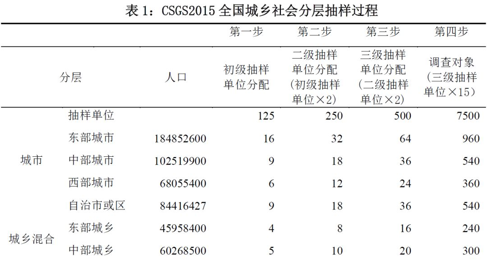 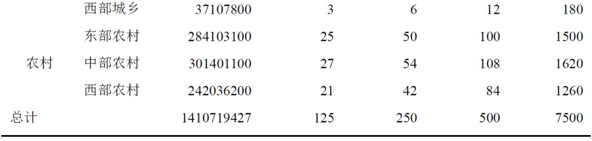
2．变量测量
美国政治学者季礼（Gilley, 2006）发展了一个具有三种层次测量政治支持量表，第一个是公民对政府合法性（legality）的看法，第二个是公民对政府正当性（justification）的看法，第三种是公民对政府认同（identification）的程度。布斯等（Booth and Seligson，2009）依据中南美洲八个国家的调查研究，从六个面向建构政治支持量表，分别是对政治社群的支持、对政治体制基本原则的支持、对政治制度的支持、对政治体制表现的评价、对地方政府的支持，以及对现任执政者）的支持。
在CSGS2015调查问卷中，题F20提出了与政治支持相关的多个具体问题，这些问题的设计参考了既有的政治支持研究和测量文献，并根据中国政治与国情的特点进行表述，包括询问社会公众对于政治制度的信心、以政治制度为荣、无条件支持政治制度以及政治制度选择偏好等。我们以此F20问题的四个子题作为本文测量因变量的操作依据（参见表2）。
我们对四个子题的数据进行了因子分析，提取一个公因子作为对一般性政治支持变量的测量。
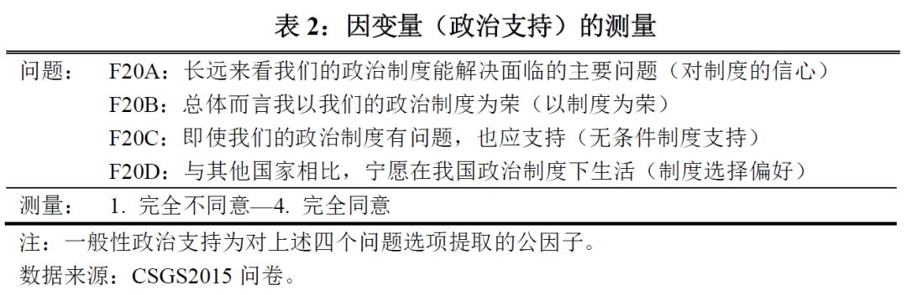
在自变量方面，本文涉及的主要包括四大类自变量：一是文化主义视野下的自变量，主要包括人际信任、集体主义、服从权威和自由主义价值观；二是制度主义视野下的自变量，主要包括经济绩效和多种政治绩效变量，三是社会结构视野下的自变量，聚焦于职业的体制差别、家庭收入、阶层认知和分配公平感知等四个变量。根据前述理论推导和已有研究的启示，可以认为文化、制度和社会不平等结构三类变量作用于政府信任。因此，我们在实证分析中将首先考察文化变量对于政府信任的影响，之后在控制文化变量的基础上考察制度变量的影响，然后在控制文化和制度变量的基础上考察社会结构变量的影响。
文化变量的设置和测量参见下表，主要包括人际信任和价值观倾向。我们区分了两类典型的价值观倾向：传统权威价值观和自由民主价值观。本文采用Shi（2014）的定义，使用因子分析的方法，对传统权威价值观测量数据提取两个公因子，分别为集体主义倾向和服从权威倾向两个公因子。
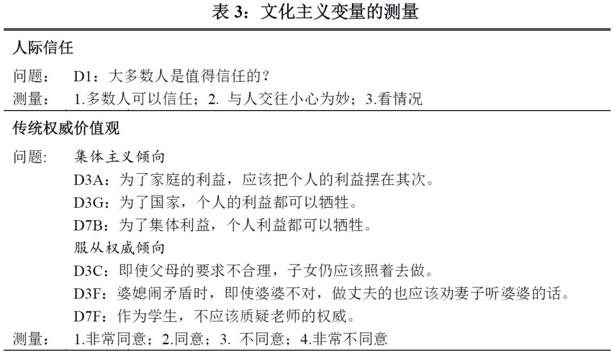 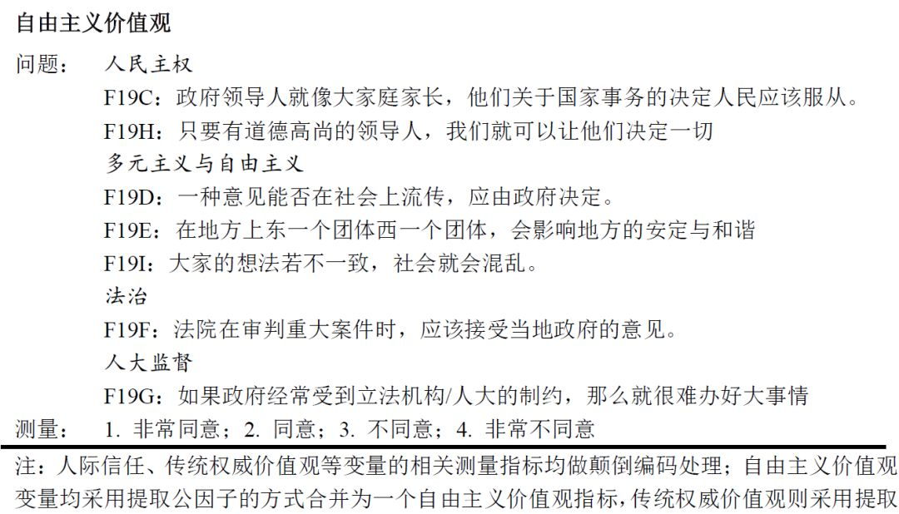
制度变量的设置和测量参见下表4，主要包括经济绩效和政治制度绩效两大类。经济绩效主要指个体对于国家经济形势的评价，政治制度绩效参照世界银行的全球治理指数，主要反映公民对于国家整体治理状况的感知，包括政治参与、人大监督、政府回应、政治自由和腐败状况五个维度。此外，为了反映近年来一系列反腐败行动对于公民政府信任的影响，我们还加入公民对于中央政府反腐败力度的认知作为政治制度绩效的一个维度。
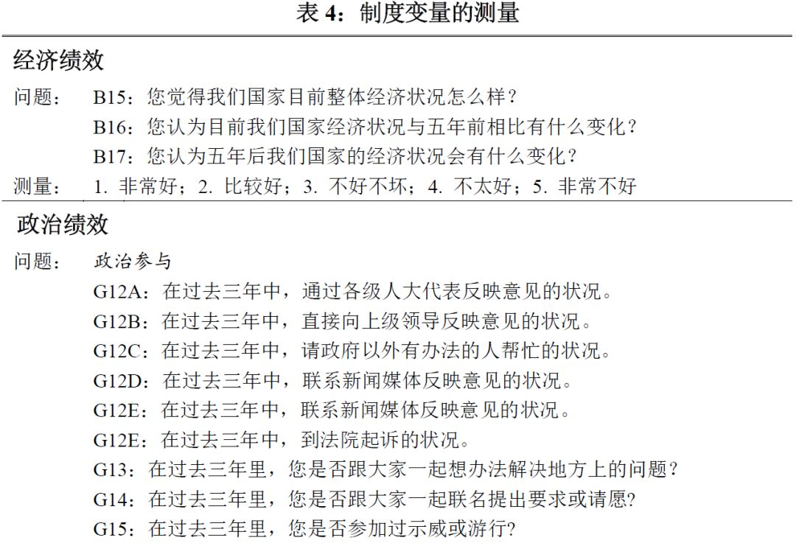 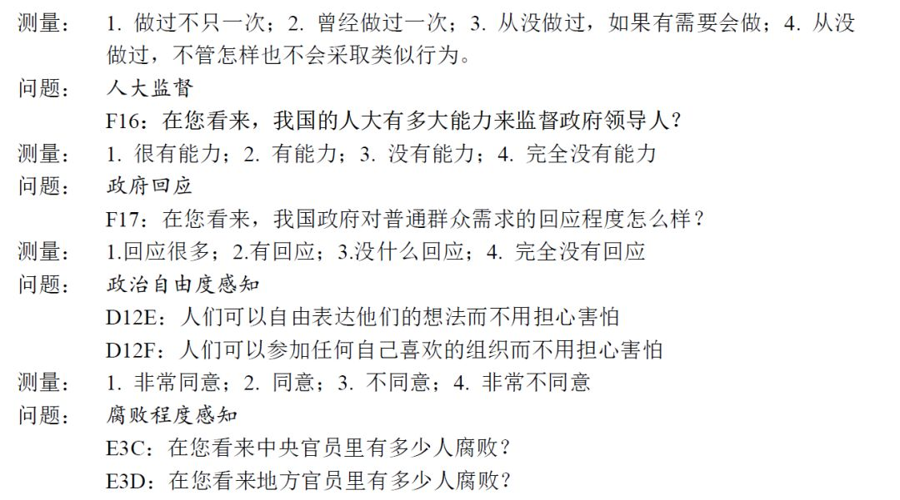 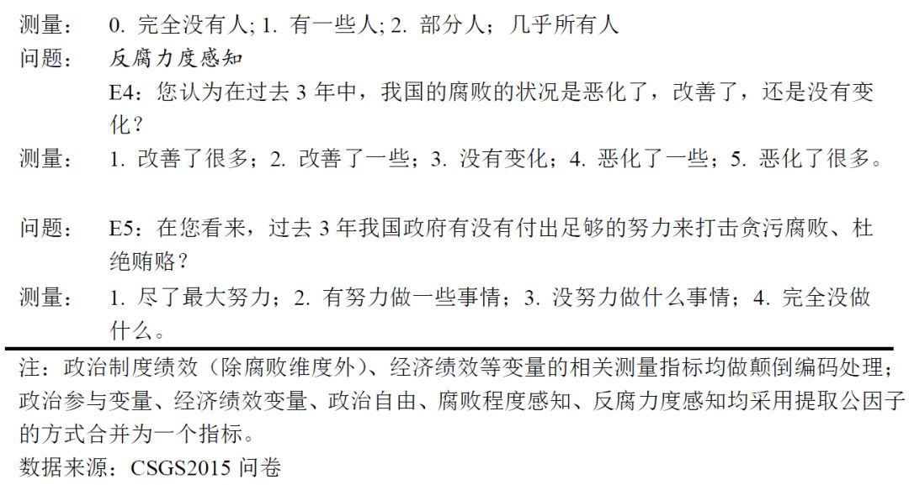
本文主要探讨的社会不平等变量的测量如下表5所示。
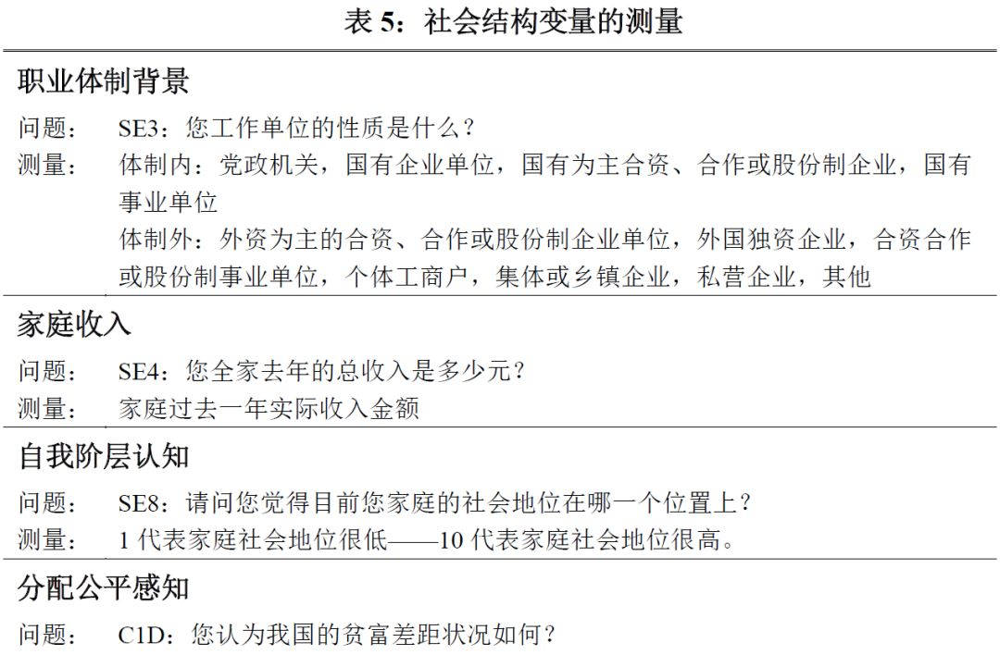 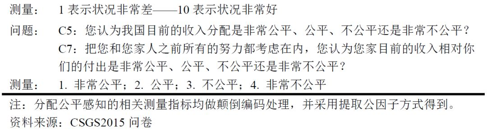
四、描述统计与回归分析
1、均值统计和因子分析
对各类政治制度支持问题的回答的数据分布请参见图1。对制度的信心、以制度为荣、无条件制度支持以及制度选择偏好等四项都处于中立以上的较高水平，说明CSGS2015的调查印证了此前多项研究对中国公民众有高度政治支持的判断。
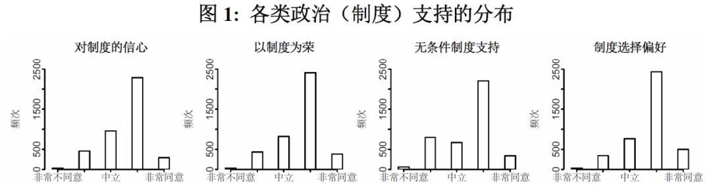
接着运用主成分分析法对F20题中四个变量进行因子分析。统计结果显示，上述变量Cronbach’s α系数为0.71，KMO值为0.74，Bartlett球度检验卡方值为3011，并且Sig.=.000，通过了统计显著性检验，说明了这四道问题在测量政治支持上具有很好的信度和效度。进行因子分析后，方差分析结果显示所提取的一个公因子的方差贡献率为39%。我们将该因子命名为“一般性政治（制度）支持”因子，作为本文中的因变量，探索各类自变量对一般性政治支持变量的影响力。
2、政治支持的回归分析及发现
本文通过逐步回归的方式代入文化、制度和社会结构三类变量以检验假设。为了避免统计上的偏误，回归分析中对于缺失值采取了剔除的处理方法。同时，我们采用因子膨胀系数（VIF）检验的方式避免变量间多重共线性的影响；结果显示各变量的VIF值均小于2，由此可以判定变量间不存在严重的多重共线性状况。从模型1到模型4，我们依次检验了人口统计学控制变量、文化主义变量、制度绩效变量和社会结构变量对于中国公民一般性政治支持的影响力，图2将四个模型的回归结果进行可视化展现。
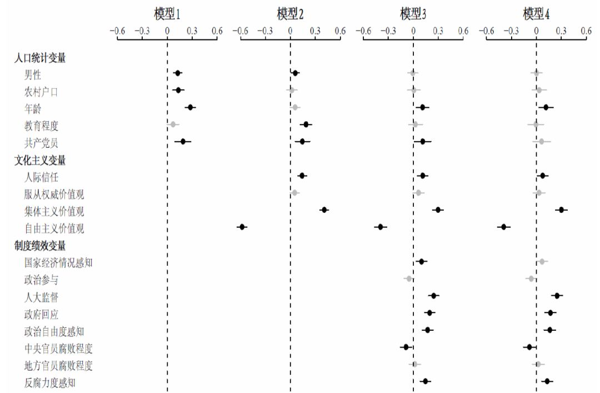 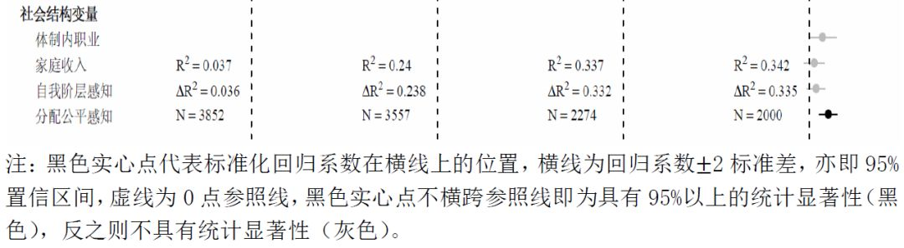
在未考虑文化、制度和社会结构因素的前提下，模型1中控制人口统计变量的回归结果显示：性别（男性）、年龄、户口（农村户口）与党员身份和政治支持之间呈现显著正相关，表明如果公民是男性，具有农村户口，随着年龄的增加，则对政治制度的支持度会提升，而且党员身份要比非党员明显地更加支持政治制度。此外，教育程度和政治支持之间的关系虽然为正相关，但并不显著。
值得注意的是，加入文化主义变量后，户口和年龄对政治支持的影响不再具有统计显著性，这表明文化主义变量较人口统计变量对于政治支持的解释力更为重要。尤其是集体主义和自由主义价值观的系数明显大于任何一个人口统计变量，说明了文化主义变量是影响政治支持的主要变量。这一结果与已有关于政治信任的研究基本一致（Shi, 2001, 2014; Wang & You, 2016）。服从权威价值观虽然与政治支持呈现正相关，但是不具有统计显著性。因此，在传统权威价值观中，集体主义倾向是主要影响政治支持的因素。综上,假设1得到了很好的检验，亦即：不同类型的价值观影响中国公众的政治支持，传统权威价值观更容易激发政治支持，而自由主义价值观则更可能抑制政治支持。
模型3检验了政治经济制度绩效变量对于政治支持的影响，回归结果显示：作为经济发展绩效的国家经济状况变量和政治支持显著正相关。政治制度绩效中，人大监督、政府回应和政治自由度感知均与政治支持显著正相关，而政治参与则负相关（但统计不显著）。在制度绩效的不同维度中，公众对十八大以来反腐败力度的感知程度对于政治支持的积极影响是显著的。比较各个变量标准化系数来看，经济发展绩效的影响力低于各种政治制度绩效。这些结果表明，以政治制度原则（人大监督）和制度绩效表现（政府回应、政治自由、反腐败力度）为主的综合性国家治理绩效正在超越过去普遍重视的经济发展绩效成为政治支持的主要来源。在腐败程度客观评价上，仅仅只有民众中央官员腐败程度的评价对于政治支持具有统计显著的影响力（负相关），说明了在中央官员腐败程度比地方官员腐败程度对于一般性政治制度支持的影响力更为显著。综上，假设2也得到了支持，即政治制度绩效对公众的政治支持具有积极的提升作用。
模型4考察了社会结构变量对于政治支持的影响。回归结果显示：首先，假设3并未获得实证支持，亦即国家体制内外的职业差别对政治支持的影响并不显著。其次，作为客观的经济不平等的指标，家庭收入水平和自我阶层认知变量对政治支持的影响并不如假设4预期的显著，而作为主观不平等指标的分配公平感知变量则对政治支持具有显著的正向效应。这不仅说明分配公平问题已经成为政治支持的一个重要影响因素，而且还表明主观性不公平感知要比客观的不公平状况更能直接激发个人的政治态度。从学理脉络上看，这个发现并非一个大新闻，因为已有很多国际研究文献作为基础。例如，美国社会学家詹姆斯·戴维斯（James Davies）早就提出经济衰退导致的个人生活状况与主观期望值之间的落差乃是社会变革的动因（Davies，1962），而近年来东亚韩国和台湾地区在基尼系数并不高的情况下由于相对剥夺感的激发导致了选举政治的剧烈变动（Zheng, 2013; 郑振清、巫永平，2014）。但是，这个发现对于当代中国研究仍然具有重要的意义，表明假设4的一半得到检验，亦即主观的分配公平问题已经成为影响中国公民政治支持的重要因素，分配公平感知越高，则政治支持越高，反之则不然。并且，引入分配公平感知变量之后，经济发展绩效的变量不再显著。这说明随着我国社会结构变迁的加快，文化、制度和社会结构共同但有区别地影响着政治支持的形成，而且社会分配问题已经取代了经济增长问题成为影响社会稳定与政治合法性的新来源，尤其值得决策者重视。
最后，在放入社会结构变量后，整体模型的解释力显著增强，模型整体解释力的R2系数从模型1的0.037开始逐步提升，模型2加入文化主义变量后为0.240，模型3和模型4分别加入制度变量和社会结构变量后为0.337和0.342。而且，在模型2到模型4中当新变量加入后，代表模型整体解释力变化的ΔR2 都具有显著的F检验结果，这表明加入的新变量对因变量具有足够强的边际效应。可以说，任何单一视角的解释都是有局限性的，包含文化、制度和社会不平等结构在内的整体模型对于中国政治支持的生成更有解释力。
五、结论
当前中国的政治制度在中国公众中享有很高的支持，这一我们时代的重要社会事实虽然广为人知，但是随着快速的经济社会结构变迁，这样的高度政治支持源自何处，具有何种特征，则需要开展系统的调查研究来分析。本文采用最新的可靠的全国性大规模城乡社会治理调查数据CSGS2015进行实证分析，不仅检验了过去文献强调的文化价值观因素和经济发展绩效因素对政治支持的影响力，还增加了对包括政治参与、人大监督、政府回应、政治自由、腐败状况和反腐败力度等在内的政治制度绩效的检验，并且首次引入社会结构变迁中的不平等变量，包括职业体制差别、家庭收入水平、自我阶层认知和主观的分配公平感知等，全面且系统地分析了文化、制度和社会结构三大类变量对政治支持的影响力。
本文的实证研究首先发现，传统的集体主义价值观对中国公众的政治支持仍然发挥着显著的促进作用，但新生的自由主义价值观则显著抑制了政治支持的水平。这说明这两种对权威态度截然相反的价值观是影响公民政治支持态度的重要因素。其次，经济发展绩效对政治支持的促进作用已经减弱，并且让位于政治制度绩效，后者包括了当代国家治理的多种要素。这表明，随着十八大以来国家治理体系和能力改革的全面展开，特别是反腐败力度的加强和政府职能改革的推进，中国公众获得了支持政治制度的理由和自信。再次，多种社会结构变量的引入及其回归分析结果表明，传统上由于国家体制内外差异而产生的职业政治态度的差别已经模糊，公众更重视本人对分配公平问题的主观感受，并且这种主观感受要比客观的不平等状况更能显著地影响政治支持。据此可以预测，如果国家加大力度促进社会公平分配和再分配，将要比单纯的经济发展绩效更能够赢得人民的政治支持，从而巩固执政合法性。
总的来说，本文的实证研究表明，中国公众对当前政治制度的支持虽然依旧很高，但是这种政治支持的社会来源分布已经发生了重要的转变，即由经济发展绩效转向政治制度绩效，并且社会公平分配影响了政治经济制度绩效对政治支持发挥作用的程度。文化、制度和社会结构因素三个方面共同但有区别地影响着中国公众的政治支持，这对全面而准确地理解中国公众高度政治支持的社会来源具有重要意义，启发我们超越单纯的历史决定论和经济发展决定论而从更广阔的国家治理和社会结构变迁来理解中国长治久安的道路。
编辑：吴温泉


“广告点一点，也是支持学术公益 ”
”